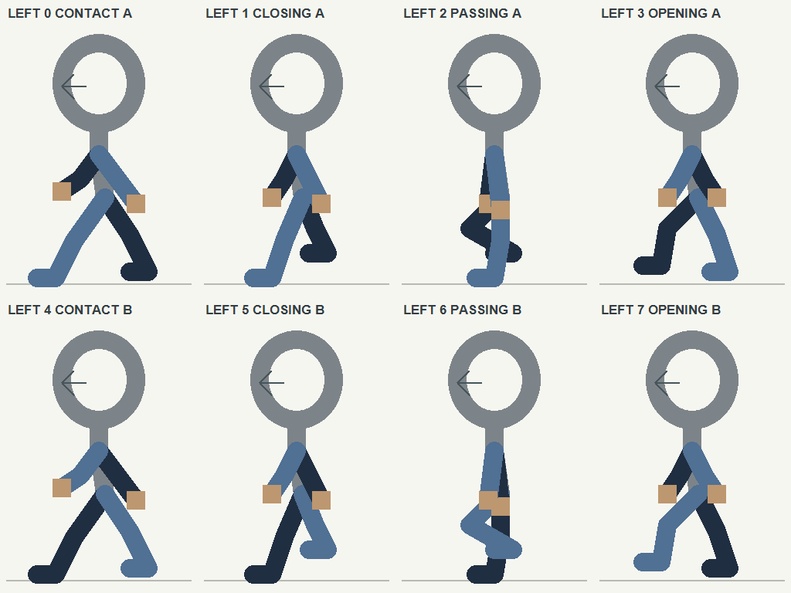
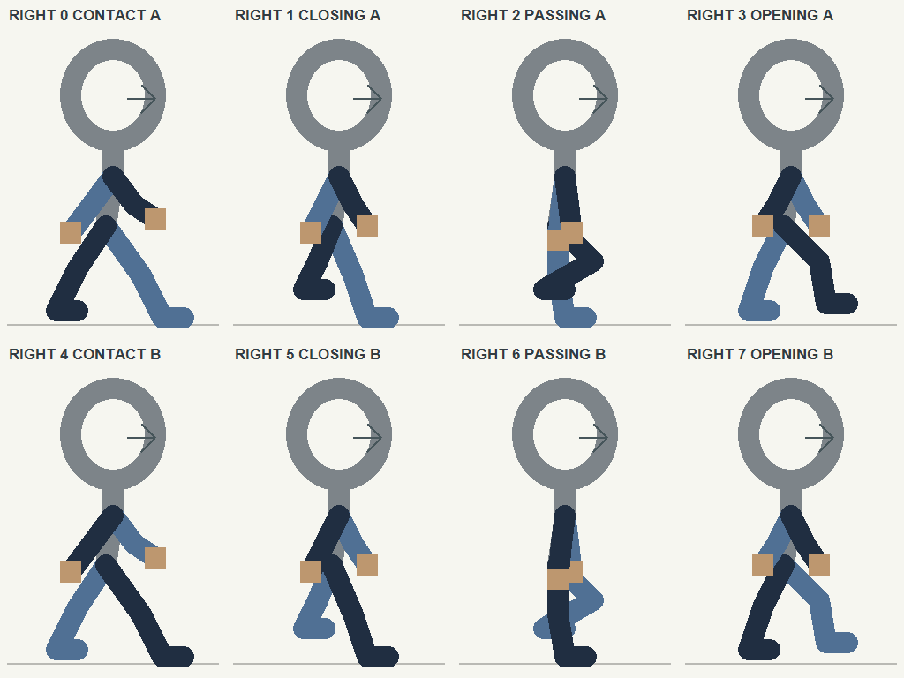
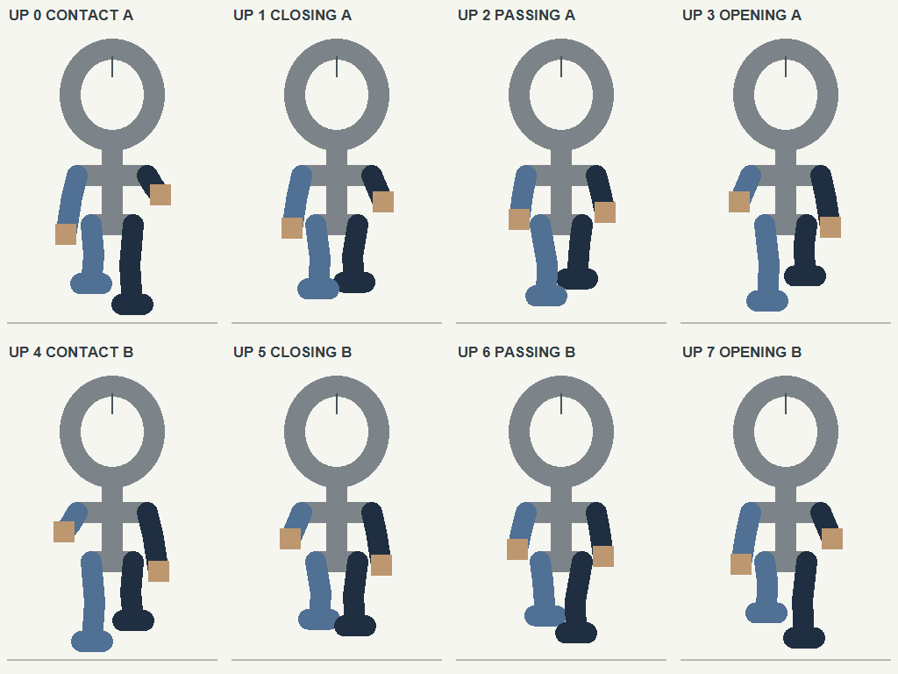
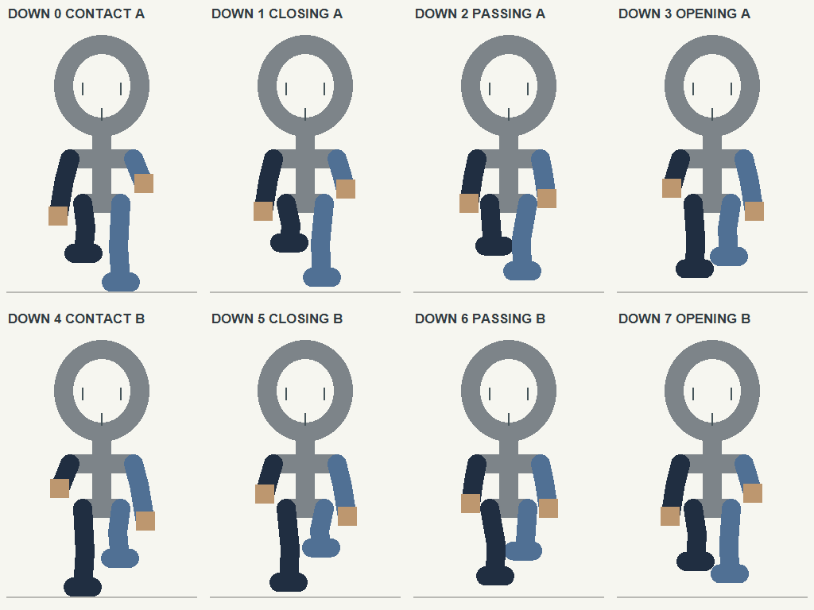
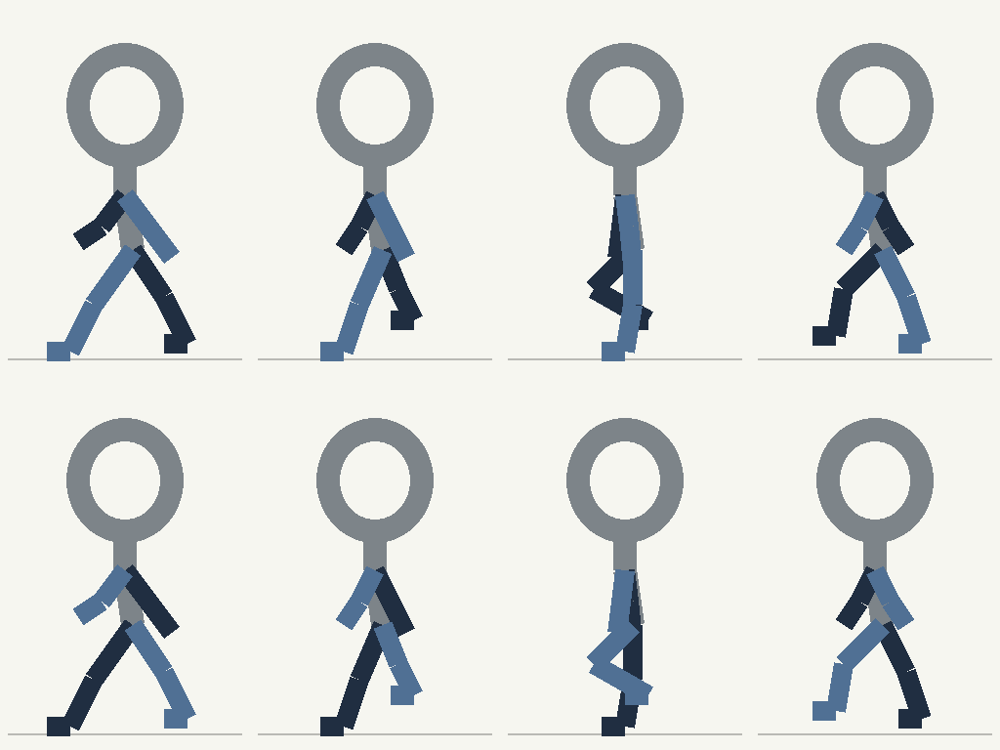

Khuê · thử chu kỳ thu–mở chân và đánh tay
Bốn storyboard trái, phải, lên và xuống chạy cùng tám pha. Bên dưới giữ thử nghiệm sprite trái để đối chiếu chuyển động.
Guide chung giúp đối chiếu pose giữa các hướng; artwork sinh từ guide vẫn cần kiểm tra hình thể. Walk trái đang dùng bản thử đã gắn trước đó.
Xem asset Khuê mới từ ba storyboard phải/lên/xuống →
Đang tải…
Storyboard guide · bốn hướng cùng pha
Cùng đầu, vai/hông, pivot (16,46) và tám pha 0–7. Xanh: tay/chân trái của nhân vật; tối: tay/chân phải. Màu giữ danh tính chi, không phải chỉ dẫn đổi màu quần.
Nhìn trái ←
Bước thu–mở theo chiều ngang.
PNG storyboard trái

Nhìn phải →
Chân phải gần camera; giữ cùng pha giải phẫu.
PNG storyboard phải

Nhìn lên ↑
Chân bước tới ngắn hơn do nhìn từ phía sau.
PNG storyboard lên

Nhìn xuống ↓
Chân bước tới dài hơn theo phối cảnh phía trước.
PNG storyboard xuống

Cả bốn loop dùng chung nút dừng, chuyển frame và nhịp ở trên. Tọa độ từng pose · Quy ước guide.
Storyboard gốc dùng trong lần thử trái

Guide chuyển động
Màu sáng: chân/tay gần. Màu tối: chân/tay xa.
Khuê · vòng thử
Khuê · sheet trước khi thay
Đối chiếu cùng frame và nhịp, không đổi hình cũ.
Tám frame mới · theo thứ tự vòng
Đang tải dữ liệu…